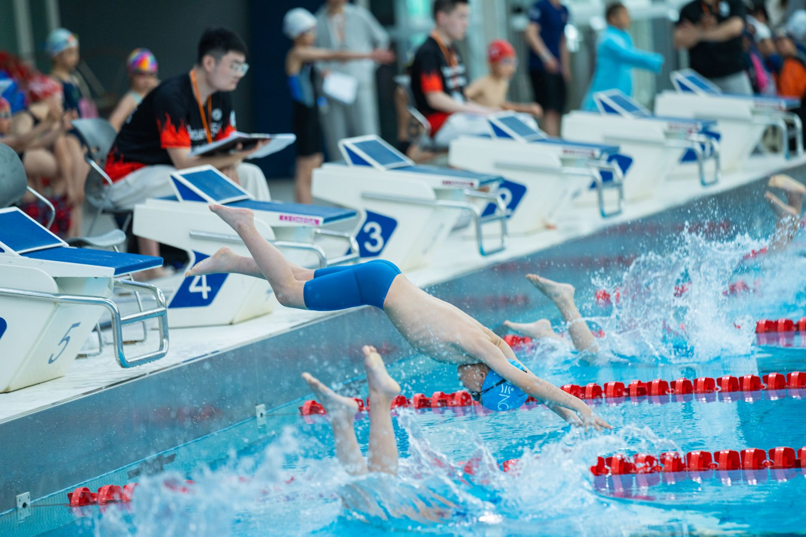

From Local Lanes to the NCAA: What Penn's Championship Swimmers Teach Young Athletes About the Long Game
When Nguyen and Whittington stepped onto the pool deck to represent the University of Pennsylvania at the NCAA Swimming and Diving Championships, they carried more than just their team's name on their shoulders. They carried years of early mornings, hard-earned improvements, and the kind of quiet determination that separates good swimmers from great ones. For young athletes training in Wesley Chapel, Land O' Lakes, and across the greater Tampa Bay area, their story is both inspiring and instructive.
Every Elite Swimmer Started Exactly Where You Are
It can be easy to look at NCAA championship competitors and assume they were simply born with extraordinary talent. The reality is far more nuanced. Most elite swimmers began as youth athletes who showed up consistently, listened to their coaches, and trusted the process even when progress felt slow. Nguyen and Whittington's achievement at Penn did not happen overnight — it was the result of years of foundational development that almost certainly began at a club or academy level, just like the programs available right here in the Tampa Bay region.
This is exactly the kind of journey that Nexar Aquatic Academy is committed to supporting. Every swimmer who enters the water for the first time, every athlete who pushes through a tough set, is writing the first chapter of a story that could lead anywhere — including a college pool deck at a national championship.
What Young Swimmers Can Learn From High-Level Competition
Watching or reading about elite swimming events like the NCAA Championships offers young athletes more than motivation. It provides a real-world look at the habits and qualities that drive long-term success. Here are a few key lessons worth reflecting on:
- Consistency beats intensity. Championship swimmers do not build their careers on occasional bursts of effort. They show up day after day, refining technique and building endurance over time.
- Mental strength is trained, not given. Competing at the highest level requires confidence under pressure. Young athletes can begin developing this skill by setting small, measurable goals in practice and racing with purpose.
- Coachability is a competitive advantage. The swimmers who reach the NCAA level are almost always the ones who actively listen, apply feedback quickly, and remain open to growth.
- Team culture matters. Even in an individual sport, the environment around a swimmer shapes their development. Training alongside motivated, supportive teammates accelerates improvement for everyone.
The Tampa Bay Pipeline Is Real
Wesley Chapel and Land O' Lakes are not just growing communities — they are growing aquatic communities. Year after year, young swimmers from this area go on to compete at the high school, collegiate, and club levels. The foundation being built in local pools today is directly connected to the kind of success stories that make headlines tomorrow.
At Nexar Aquatic Academy, we believe every young athlete in our community deserves access to the coaching, structure, and competitive experience that makes college-level swimming a realistic goal. Whether your child is just learning their first stroke or is already chasing qualifying times, the path forward starts with intentional, quality training.
Celebrate the Journey, Not Just the Destination
The NCAA Championships represent the destination, but the real story of Nguyen and Whittington — and every swimmer like them — is in the journey. It is in the practices they did not skip, the technique corrections they embraced, and the love for the sport that kept them coming back.
If your young athlete is swimming in the Tampa Bay area right now, they are already on that journey. Keep encouraging them. Keep showing up. The pool deck has a way of rewarding those who stay the course.
Ready to get in the water?
First practice is completely FREE — no commitment needed.